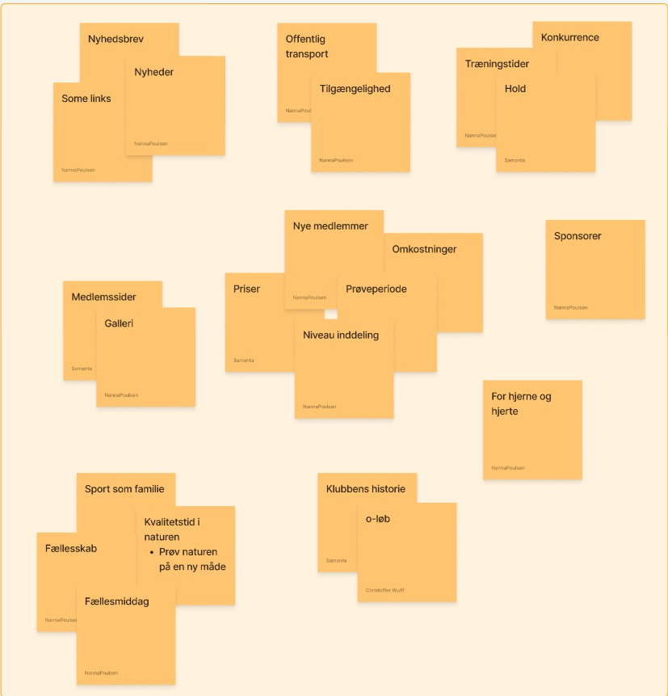
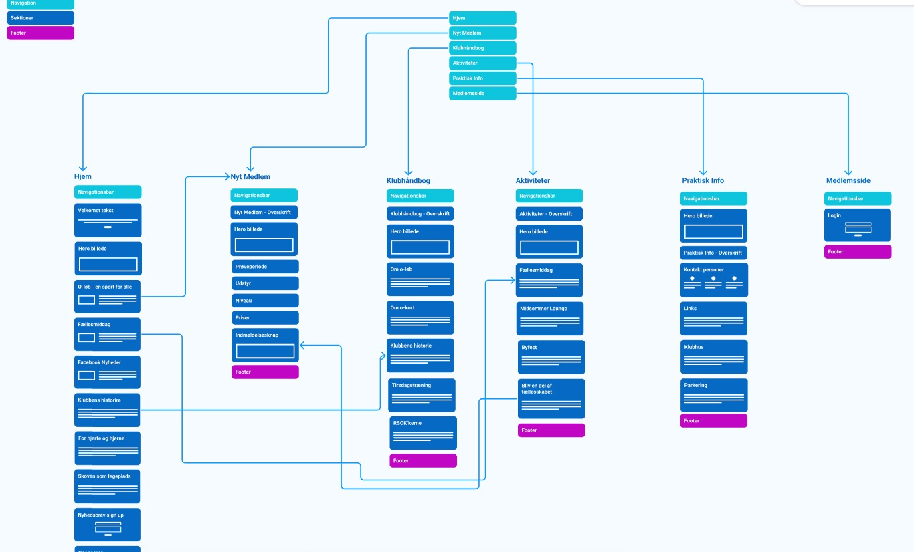
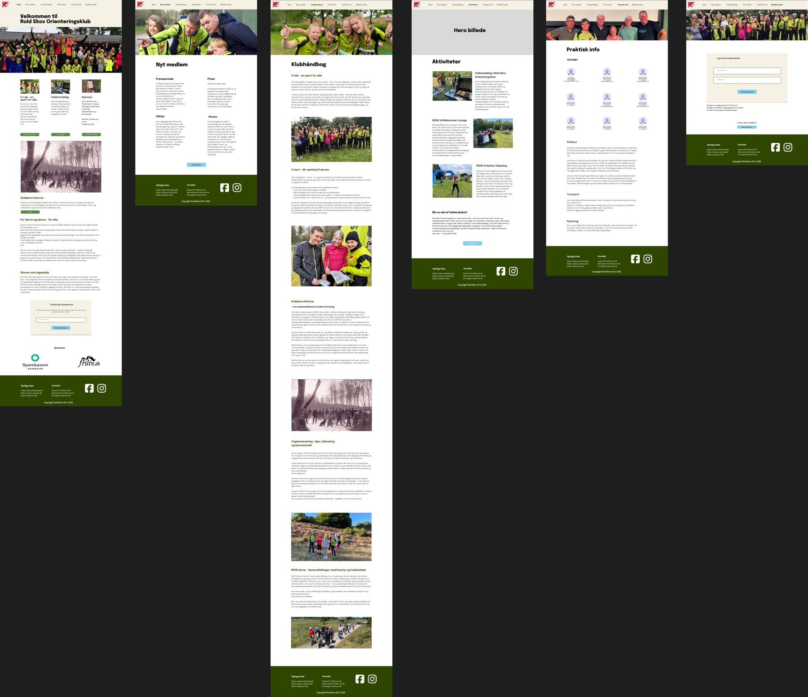

-
Research
- Desk research
- Analyse af indhold og den eksisterende hjemmeside (content inventory)
- Kundemøde med en repræsentant fra klubben
-
Design
- Affinity diagram og sitemap
- Skitser, wireframes og hi-fi prototyper i Figma
- Designprincipper baseret på grids og UI-teori
-
Test
- Brugertest med think aloud-metoden
- Iterativ forbedring af navigation og indhold
- Klar kommunikation og tydelig navigation
Min rolle
Jeg arbejdede med strukturering af indhold, udvikling af layout og kodning i HTML og CSS. Jeg designede wireframes og deltog i tests og evaluering. Jeg hjalp også med at analysere brugernes behov og bygge en mere intuitiv navigationsstruktur.
Hvad jeg lærte
Jeg lærte, hvor vigtigt det er at analysere rigtigt fra start, og hvordan man bruger brugerfeedback til at skabe et bedre design. Jeg fik erfaring med struktureret indhold og responsive layouts, og jeg blev bedre til at tænke både funktionelt og visuelt i Figma og HTML.
1 · Research
Fra antagelser til viden
Jeg startede med desk research for at forstå, hvorfor folk søger ud i naturen. Friluftsrådet viser, at 79 % af de hyppigt friluftsaktive nævner afslapning som vigtig motivation, og Idrættens Analyseinstitut viser, at 44 % af voksne helst motionerer i naturen. Dernæst satte vi hypoteser op, fx at unge familier flytter til området og leder efter en aktivitet at dele. Hypoteserne testede vi med 4 kvalitative interviews med samtykke og GDPR-tekst, og målgruppen blev afgrænset til Nordjylland, 18-90 år.
Interviewene gav nøgleord, som jeg sorterede i et affinity diagram. Fire temaer gik igen: pris og gratis prøveperiode, begynderhold og niveauinddeling, fællesskab og sport som familie og tilgængelighed.

2 · Indhold og struktur
Fra temaer til sider
Temaerne blev til indhold. Spørgsmål om pris og prøveperiode fik en plads på siden Nyt medlem sammen med udstyr, niveau og en tydelig indmeldelsesknap. Fællesskabet, træningstiderne og familiearrangementer blev samlet under Aktiviteter og Klubhåndbog, og praktisk information som kontaktpersoner, klubhus og parkering fik sin egen side.
Jeg tegnede det som et sitemap med seks sider: Hjem, Nyt medlem, Klubhåndbog, Aktiviteter, Praktisk info og Medlemsside. Hver side har en global navigation, og forsiden har desuden en lokal navigation, der leder nye besøgende videre.

3 · Design
Fra struktur til prototype
Strukturen blev til skitser, wireframes og til sidst hi-fi prototyper i Figma. Designet bruger en varm cremefarve og mørkegrøn, som passer til skoven, og grids og UI-teori til at holde siderne ens og overskuelige.

4 · Test
Think aloud med 4 deltagere
Jeg testede hi-fi prototypen på en bærbar med 4 deltagere, som tænkte højt, mens de løste 5 opgaver. Alle fandt Aktiviteter med det samme (opgave 1), og alle fandt kontaktoplysningerne i den globale navigation (opgave 3). Tre ud af fire brugte den lokale navigation på forsiden til at finde, hvordan man kommer i gang (opgave 4).
Testen viste også svagheder. En deltager ledte efter et søgefelt for at finde klubbens historie, og to af fire scrollede ned i footeren for at finde kontakt. Opgave 5 gav mest problemer: familie- og børnearrangementer var ikke tydeligt navngivet, og først efter omformuleringer fandt 3 ud af 4 frem til Tirsdagstræning i Klubhåndbogen.
5 · Ændring
Fra test til næste iteration
Testen bekræftede, at navigationen virker, men pegede på tre forbedringer: en søgefunktion, kontaktoplysninger i footeren og familievenlige arrangementer, der er tydeligt navngivet og synlige. Det hænger sammen med research: familier og fællesskab var et af interviewenes hovedtemaer, så det skal være lettere at finde.